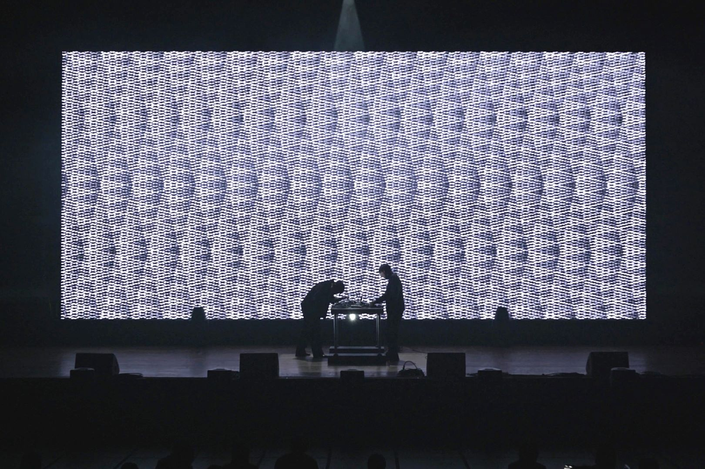
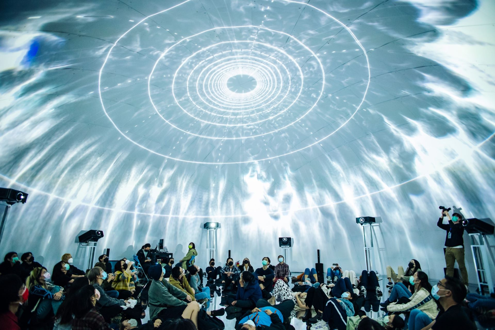
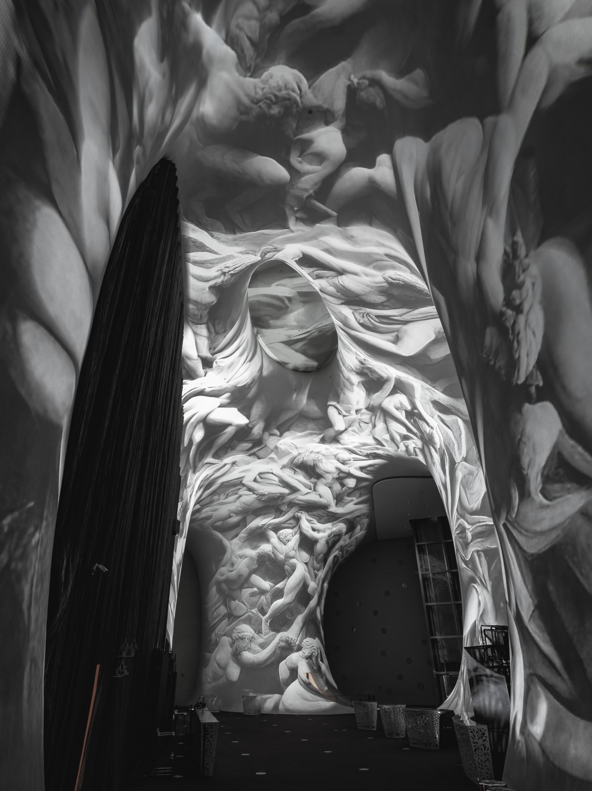
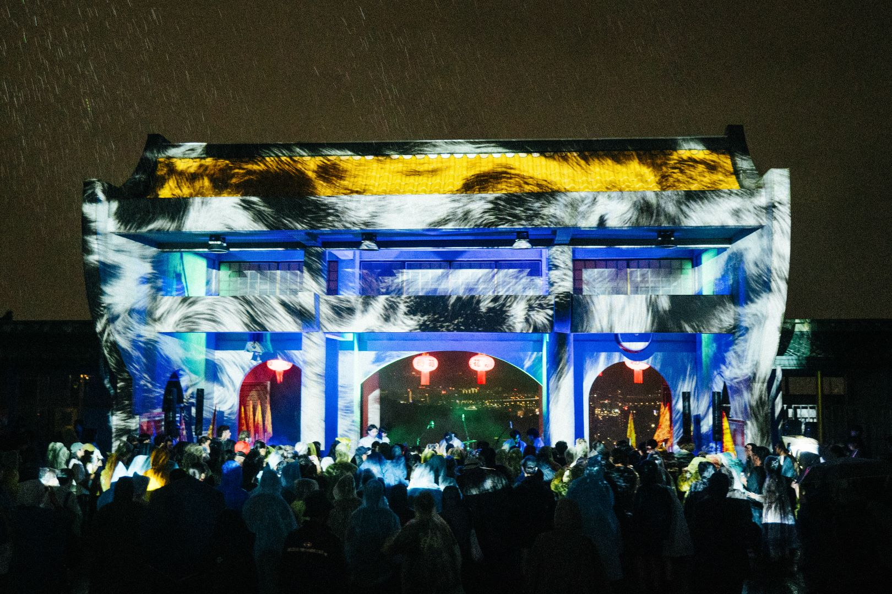
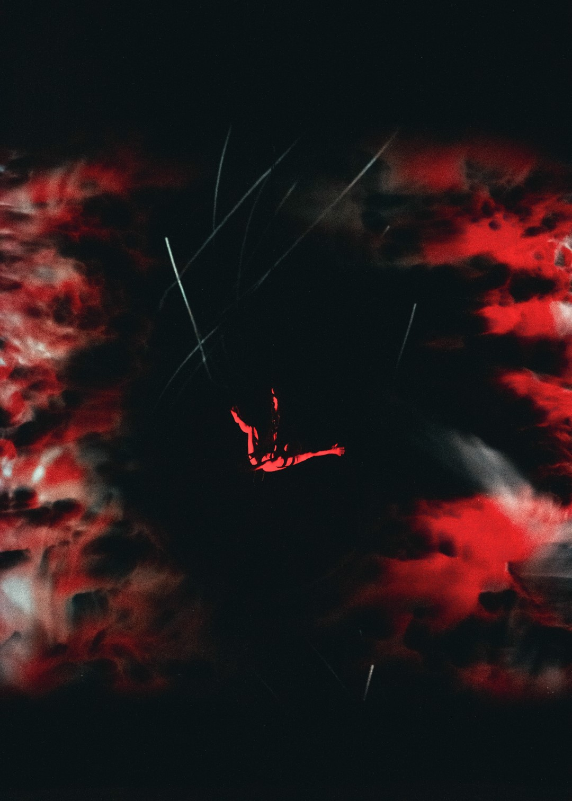

*dt">
∫<Sense>*dt
Audio-Visual Live Performance

Sedimentary
Audio-Visual Installation

MRSP
Audio-Visual Live Performance

INNERSTAR-01 : Reddening
Audio-Visual Fulldome

Homoform
Audio-Visual Screening

MongTong-Live
Real-time Generative Visual

DanielYeung
FreespaceDance-exhibitionist Real-time Generative Visual
FreespaceDance-exhibitionist Real-time Generative Visual

Dispersion
Audio-Visual Live Performance

Archive